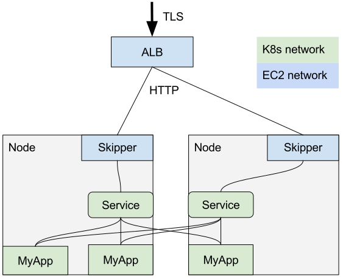
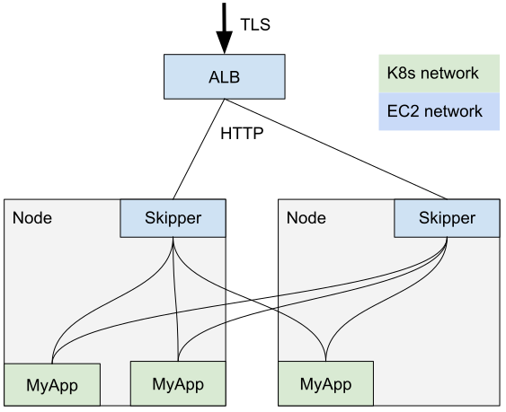
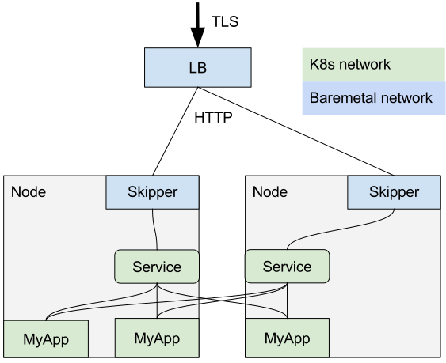

Skipper Ingress Controller¶
This documentation is meant for cluster operators and describes how to install Skipper as Ingress-Controller in your Kubernetes Cluster.
Why you should use Skipper as ingress controller?¶
Baremetal load balancers perform really well, but their configuration is not updated frequently and most of the installations are not meant for rapid change. With the introduction of Kubernetes this assumption is no longer valid and there was a need for a HTTP router which supported backend routes which changed very frequently. Skipper was initially designed for a rapidly changing routing tree and subsequently used to implement an ingress controller in Kubernetes.
Cloud load balancers scale well and can be updated frequently, but do not provide many features. Skipper has advanced resiliency and deployment features, which you can use to enhance your environment. For example, ratelimiters, circuitbreakers, blue-green deployments, shadow traffic and more – see Skipper Ingress Usage.
Comparison with other Ingress Controllers¶
At Zalando we chose to run kube-ingress-aws-controller
with skipper ingress
as the target group. While AWS load balancers give us features
like TLS termination, automated certificate rotation, possible WAF,
and Security Groups,
the HTTP routing capabilities are very limited. Skipper’s main advantage
compared to other HTTP routers is matching and changing HTTP. Another advantage
for us and for skipper users in general is that defaults with
kube-ingress-aws-controller
just work as you would expect.
For lower latency, safety, and cost reasons you can also use Network
Load Balancer (NLB) instead of Application Load Balancer (ALB).
We tested two cases (Skipper backends were pre-scaled and not changed):
- A hard switch to a cold NLB with 1 million requests per second (RPS). A similar test with 100k RPS with ALB results in client visible error rates and high latency percentiles.
- A 6h test with 2k RPS showed regular spikes in p999 latency to more than 100ms in for ALB. NLB showed a flat p999 latency of 25-35ms for the same workload.
There are a number of other ingress controllers including traefik, nginx, haproxy or aws-alb-ingress-controller. Why not one of these?
HAproxy and Nginx are well understood and good TCP/HTTP proxies, that were built before Kubernetes. As a result, the first drawback is their reliance on static configuration files which comes from a time when routes and their configurations were relatively static. Secondly, the list of annotations to implement even basic features are already quite a big list for users. Skipper was built to support dynamically changing route configurations, which happens quite often in Kubernetes. Other advantage of using Skipper is that we are able to easily implement automated canary deployments, automated blue-green deployments or shadow traffic.
However there are some features that have better support in aws-alb-ingress-controller,
HAproxy and nginx. For instance the sendfile()
operation. If you need to stream a large file or large amount of files, then you may want to
go for one of these options.
aws-alb-ingress-controller directly routes traffic to your Kubernetes services, which is
both good and bad, because it can reduce latency, but comes with the risk of depending on
kube-proxy routing. kube-proxy routing can take up to 30 seconds, ETCD ttl, for finding
pods from dead nodes. In Skipper we passively observe errors from endpoints and are able to
drop these from the load balancer members. We add these to an actively checked member pool,
which will enable endpoints if these are healthy again from skipper’s point of view.
Additionally the aws-alb-ingress-controller does not support features like ALB sharing,
or Server Name Indication which can reduce
costs. Features like path rewriting
are also not currently supported.
Traefik has a good community and support for Kubernetes. Skipper originates from
Project Mosaic which was started in 2015. Back then Traefik
was not yet a mature project and still had time to go before the v1.0.0 release.
Traefik also does not currently support our OpenTracing provider.
It also did not support traffic splitting when we started stackset-controller
for automated traffic switching. We have also recently done significant work on running
Skipper as API gateway within Kubernetes, which could potentially help many teams that
run many small services on Kubernetes. Skipper predicates and filters are a powerful
abstraction which can enhance the system easily.
Comparison with service mesh¶
Why run Skipper and not Istio, Linkerd or other service-mesh solutions?
Skipper has a Kubernetes native integration, which is reliable, proven in production since end of 2015 as of March 2019 run in 112 Kubernetes clusters at Zalando. Skipper already has most of the features provided by service meshes:
- Authentication/Authorization in Kubernetes ingress, and can also integrate a custom service with webhook
- Diagnosis tools that support latency, bandwidth throttling, random content and more.
- Rich Metrics which you can enable and disable in the Prometheus format.
- Support for different Opentracing providers including jaeger, lightstep and instana
- Ratelimits support with cluster ratelimits as a pending solution, which enables you to stop login attacks easily
- Connects to endpoints directly, instead of using Kubernetes services
- Retries requests, if the request can be safely retried, which is only the case if the error happens on the TCP/IP connection establishment or a backend whose requests are defined as idempotent.
- Simple East-West Communication which enables proper communication paths without the need of yet another tool to do service discovery. See how to run skipper as API Gateway with East-West setup, if you want to run this powerful setup. Kubernetes, Skipper and DNS are the service discovery in this case.
- Blue-green deployments with automation if you like to use stackset-controller
- shadow-traffic to determine if the new version is able to handle the traffic the same as the old one
- A simple way to do A/B tests
- You are free to use cloud providers TLS terminations and certificate rotation, which is reliable and secure. Employees cannot download private keys and certificates are certified by a public CA. Many mTLS setups rely on insecure CA handling and are hard to debug in case of failure.
- We are happy to receive issues and pull requests in our repository, but if you need a feature which cannot be implemented upstream, you are also free to use skipper as a library and create internal features to do whatever you want.
With Skipper you do not need to choose to go all-in and you are able to add features as soon as you need or are comfortable.
What is an Ingress-Controller?¶
Ingress-controllers are serving http requests into a Kubernetes cluster. Most of the time traffic will pass through ingress and go to the Kubernetes endpoints of the respective pods. For having a successful ingress, you need to have a DNS name pointing to a set of stable IP addresses that act as a load balancer.
Skipper as ingress-controller:
- cloud: deploy behind the cloud load balancer
- baremetal: deploy behind your hardware/software load balancer and have all skipper as members in one pool.
You would point your DNS entries to the load balancer in front of skipper, for example automated using external-dns.
Why Skipper uses EndpointSlices or Endpoints and not Services?¶
Skipper does not use the ClusterIP of Kubernetes Services to route traffic to the pods. Instead it uses the Endpointslices or Endpoints API to bypass kube-proxy created iptables to remove overhead like conntrack entries for iptables DNAT. Skipper can also reuse connections to Pods, such that you have no overhead in establishing connections all the time. To prevent errors on node failures, Skipper also does automatic retries to another endpoint when it gets a connection refused or TLS handshake error to the endpoint. Other reasons are future support of features like session affinity, different load balancer algorithms or distributed loadbalancing also known as service mesh.
Using EndpointSlices instead of Endpoints¶
EndpointSlices provide the ability to scale beyond 1000 load balancer members in one pool.
To enable EndpointSlices you need to run skipper or routesrv with
-enable-kubernetes-endpointslices=true.
Using Services instead of Endpoints¶
While using Endpoints is the preferred way of using Skipper as an ingress controller as described in the section above, there might be edge cases that require the use of Kubernetes Services instead.
An example of scenario where you might need to use Services is when you rely on Istio networking features to connect multiple clusters, as the IPs of Kubernetes Endpoints will not resolve in all cases.
If you find yourself in this category, you can override the default behaviour
by setting the KubernetesForceService flag to true in the Skipper.Options struct.
This will cause Skipper to create routes with BackendType=eskip.NetworkBackend instead
of BackendType=eskip.LBBackend and use the following address format:
http://<service name>.<namespace>.svc.cluster.local:<port>. See the Kubernetes Service DNS
documentation
for more information.
AWS deployment¶
In AWS, this could be an ALB with DNS pointing to the ALB. The ALB can
then point to an ingress-controller running on an EC2 node and uses
Kubernetes hostnetwork port specification in the Pod spec.
A logical overview of the traffic flow in AWS is shown in this picture:

We described that Skipper bypasses Kubernetes Service and uses directly endpoints for good reasons, therefore the real traffic flow is shown in the next picture. 
Baremetal deployment¶
In datacenter, baremetal environments, you probably have a hardware
load balancer or some haproxy or nginx setup, that serves most of your
production traffic and DNS points to these endpoints. For example
*.ingress.example.com could point to your virtual server IPs in front
of ingress. Skippers could be used as pool members, which do the http
routing. Your load balancer of choice could have a wildcard certificate
for *.ingress.example.com and DNS for this would point to your
load balancer. You can also automate DNS records with
external-dns,
if you for example use PowerDNS as provider and have a load balancer
controller that modifies the status field in ingress to your
load balancer virtual IP.

RouteSRV¶
In kubernetes skipper-ingress fetches ingress/routegroup configurations every 3s, with high number of skipper pods ~100 we faced issues with kube-apiserver. At which we introduced RouteSRV, which will serve as a layer between kube-apiserver and skipper ingress, so it will give us more flexibility in scaling skipper-ingress without affecting k8s-apiserver
Kubernetes dataclient as routes source¶
graph TD;
kapis(kubeapiserver) --fetches ingresses--> s(skipper);Kubernetes with RouteSRV as routes source¶
graph TD;
kapis(kubeapiserver) --fetches ingresses--> s(routesrv) --fetches routes--> d1(skipper1) & d2(skipper2);Requirements¶
In general for one endpoint you need, a DNS A/AAAA record pointing to one or more load balancer IPs. Skipper is best used behind this layer 4 load balancer to route and manipulate HTTP data.
minimal example:
- layer 4 load balancer has
1.2.3.4:80as socket for a virtual server pointing to all skipper ingress *.ingress.example.compoints to 1.2.3.4- ingress object with host entry for
myapp.ingress.example.comtargets a service type ClusterIP - service type ClusterIP has a selector that targets your Pods of your myapp deployment
TLS example:
- same as before, but you would terminate TLS on your layer 4 load balancer
- layer 4 load balancer has
1.2.3.4:443as socket for a virtual server - you can use an automated redirect for all port 80 requests to https with
-kubernetes-https-redirectand change the default redirect code with-kubernetes-https-redirect-code
Install Skipper as ingress-controller¶
You should have a base understanding of Kubernetes and Ingress.
Prerequisites:
- You should checkout the git repository to have access to the
manifests:
git clone https://github.com/zalando/skipper.git - You should enter the cloned directory:
cd skipper - You have to choose how to install skipper-ingress. You can install it as daemonset or as deployment.
Beware, in order to get traffic from the internet, we would need to
have a load balancer in front to direct all traffic to skipper. Skipper
will route the traffic based on ingress objects. The load balancer
should have a HTTP health check, that does a GET request to
/kube-system/healthz on all Kubernetes worker nodes. This method is
simple and used successfully in production. In AWS you can run
kube-ingress-aws-controller
to create these load balancers automatically based on the ingress
definition.
Deployment style¶
Follow the deployment style you like: daemonset or deployment.
Daemonset¶
We start to deploy skipper-ingress as a daemonset, use hostNetwork and expose the TCP port 9999 on each Kubernetes worker node for incoming ingress traffic.
To deploy all manifests required for the daemonset style, you can run:
kubectl create -f docs/kubernetes/deploy/daemonset
# cat docs/kubernetes/deploy/daemonset/daemonset.yaml
apiVersion: apps/v1
kind: DaemonSet
metadata:
name: skipper-ingress
namespace: kube-system
labels:
application: skipper-ingress
version: v0.10.180
component: ingress
spec:
selector:
matchLabels:
application: skipper-ingress
updateStrategy:
type: RollingUpdate
template:
metadata:
name: skipper-ingress
labels:
application: skipper-ingress
version: v0.11.1
component: ingress
spec:
priorityClassName: system-node-critical
serviceAccountName: skipper-ingress
tolerations:
- key: dedicated
operator: Exists
nodeSelector:
kubernetes.io/role: worker
hostNetwork: true
containers:
- name: skipper-ingress
image: registry.opensource.zalan.do/teapot/skipper:v0.22.170
ports:
- name: ingress-port
containerPort: 9999
hostPort: 9999
- name: metrics-port
containerPort: 9911
args:
- "skipper"
- "-kubernetes"
- "-kubernetes-in-cluster"
- "-kubernetes-path-mode=path-prefix"
- "-address=:9999"
- "-wait-first-route-load"
- "-proxy-preserve-host"
- "-serve-host-metrics"
- "-enable-ratelimits"
- "-experimental-upgrade"
- "-metrics-exp-decay-sample"
- "-reverse-source-predicate"
- "-metrics-flavour=codahale,prometheus"
- "-enable-connection-metrics"
- "-max-audit-body=0"
- "-histogram-metric-buckets=.01,.025,.05,.075,.1,.2,.3,.4,.5,.75,1,2,3,4,5,7,10,15,20,30,60,120,300,600"
resources:
requests:
cpu: 150m
memory: 150Mi
readinessProbe:
httpGet:
path: /kube-system/healthz
port: 9999
initialDelaySeconds: 5
timeoutSeconds: 5
securityContext:
readOnlyRootFilesystem: true
runAsNonRoot: true
runAsUser: 1000
Please check, that you are using the latest release, and do not use latest tag in production. While skipper is quite stable as library and proxy, there is ongoing development to make skipper more safe, increase visibility, fix issues that lead to incidents and add features.
Deployment¶
We start to deploy skipper-ingress as a deployment with an HPA, use hostNetwork and expose the TCP port 9999 on each Kubernetes worker node for incoming ingress traffic.
To deploy all manifests required for the deployment style, you can run:
kubectl create -f docs/kubernetes/deploy/deployment
Now, let’s see what we have just deployed. This will create serviceaccount, PodSecurityPolicy and RBAC rules such that skipper-ingress is allowed to listen on the hostnetwork and poll ingress resources.
# cat docs/kubernetes/deploy/deployment/rbac.yaml
apiVersion: policy/v1beta1
kind: PodSecurityPolicy
metadata:
name: hostnetwork
spec:
hostNetwork: true
hostPorts:
- max: 10000
min: 50
supplementalGroups:
rule: RunAsAny
fsGroup:
rule: RunAsAny
runAsUser:
# Require the container to run without root privileges.
rule: 'MustRunAsNonRoot'
seLinux:
rule: RunAsAny
---
apiVersion: rbac.authorization.k8s.io/v1
kind: ClusterRole
metadata:
name: hostnetwork-psp
rules:
- apiGroups:
- extensions
resourceNames:
- hostnetwork
resources:
- podsecuritypolicies
verbs:
- use
---
apiVersion: v1
kind: ServiceAccount
metadata:
name: skipper-ingress
namespace: kube-system
---
apiVersion: rbac.authorization.k8s.io/v1
kind: ClusterRole
metadata:
name: skipper-ingress
rules:
- apiGroups:
- networking.k8s.io
resources:
- ingresses
verbs:
- get
- list
- apiGroups:
- extensions
resources:
- ingresses
verbs:
- get
- list
- apiGroups: [""]
resources:
- namespaces
- services
- endpoints
- pods
verbs:
- get
- list
- apiGroups:
- discovery.k8s.io
resources:
- endpointslices
verbs:
- get
- list
- apiGroups:
- zalando.org
resources:
- routegroups
verbs:
- get
- list
---
apiVersion: rbac.authorization.k8s.io/v1
kind: ClusterRoleBinding
metadata:
name: skipper-ingress
roleRef:
apiGroup: rbac.authorization.k8s.io
kind: ClusterRole
name: skipper-ingress
subjects:
- kind: ServiceAccount
name: skipper-ingress
namespace: kube-system
---
apiVersion: rbac.authorization.k8s.io/v1
kind: RoleBinding
metadata:
name: skipper-ingress-hostnetwork-psp
namespace: kube-system
roleRef:
apiGroup: rbac.authorization.k8s.io
kind: ClusterRole
name: hostnetwork-psp
subjects:
- kind: ServiceAccount
name: skipper-ingress
namespace: kube-system
The next file creates deployment with all options passed to skipper, that you should care in a basic production setup.
# cat docs/kubernetes/deploy/deployment/deployment.yaml
apiVersion: apps/v1
kind: Deployment
metadata:
name: skipper-ingress
namespace: kube-system
labels:
application: skipper-ingress
version: v0.11.40
component: ingress
spec:
strategy:
rollingUpdate:
maxSurge: 0
selector:
matchLabels:
application: skipper-ingress
template:
metadata:
labels:
application: skipper-ingress
version: v0.11.40
component: ingress
spec:
affinity:
podAntiAffinity:
requiredDuringSchedulingIgnoredDuringExecution:
- labelSelector:
matchExpressions:
- key: application
operator: In
values:
- skipper-ingress
topologyKey: kubernetes.io/hostname
priorityClassName: system-cluster-critical
serviceAccountName: skipper-ingress
nodeSelector:
kubernetes.io/role: worker
dnsPolicy: ClusterFirstWithHostNet
hostNetwork: true
containers:
- name: skipper-ingress
image: registry.opensource.zalan.do/teapot/skipper:v0.22.170
ports:
- name: ingress-port
containerPort: 9999
hostPort: 9999
args:
- "skipper"
- "-kubernetes"
- "-kubernetes-in-cluster"
- "-kubernetes-path-mode=path-prefix"
- "-address=:9999"
- "-wait-first-route-load"
- "-proxy-preserve-host"
- "-serve-host-metrics"
- "-disable-metrics-compat"
- "-enable-profile"
- "-enable-ratelimits"
- "-experimental-upgrade"
- "-metrics-exp-decay-sample"
- "-reverse-source-predicate"
- "-metrics-flavour=prometheus"
- "-enable-connection-metrics"
- "-max-audit-body=0"
- "-histogram-metric-buckets=.0001,.00025,.0005,.00075,.001,.0025,.005,.0075,.01,.025,.05,.075,.1,.2,.3,.4,.5,.75,1,2,3,4,5,7,10,15,20,30,60,120,300,600"
- "-expect-continue-timeout-backend=30s"
- "-keepalive-backend=30s"
- "-max-idle-connection-backend=0"
- "-response-header-timeout-backend=1m"
- "-timeout-backend=1m"
- "-tls-timeout-backend=1m"
- "-close-idle-conns-period=20s"
- "-idle-timeout-server=62s"
- "-read-timeout-server=5m"
- "-write-timeout-server=60s"
- '-default-filters-prepend=enableAccessLog(4,5) -> lifo(2000,20000,"3s")'
resources:
limits:
cpu: "4"
memory: "1Gi"
requests:
cpu: "4"
memory: "1Gi"
readinessProbe:
httpGet:
path: /kube-system/healthz
port: 9999
initialDelaySeconds: 60
timeoutSeconds: 5
securityContext:
readOnlyRootFilesystem: true
runAsNonRoot: true
runAsUser: 1000
This will deploy a HorizontalPodAutoscaler to scale skipper-ingress based on load.
# cat docs/kubernetes/deploy/deployment/hpa.yaml
apiVersion: autoscaling/v2
kind: HorizontalPodAutoscaler
metadata:
name: skipper-ingress
namespace: kube-system
labels:
application: skipper-ingress
spec:
scaleTargetRef:
apiVersion: apps/v1
kind: Deployment
name: skipper-ingress
minReplicas: 3
maxReplicas: 50
metrics:
- type: Resource
resource:
name: cpu
target:
type: Utilization
averageUtilization: 70
- type: Resource
resource:
name: memory
target:
type: Utilization
averageUtilization: 70
The next file will group skipper-ingress with a service, such that internal clients can access skipper via Kubernetes service.
# cat docs/kubernetes/deploy/deployment/service.yaml
kind: Service
apiVersion: v1
metadata:
name: skipper-ingress
namespace: kube-system
labels:
application: skipper-ingress
annotations:
prometheus.io/path: /metrics
prometheus.io/port: "9911"
prometheus.io/scrape: "true"
spec:
type: ClusterIP
ports:
- port: 80
targetPort: 9999
protocol: TCP
selector:
application: skipper-ingress
Test your skipper setup¶
We now deploy a simple demo application serving html:
# cat docs/kubernetes/deploy/demo/deployment.yaml
apiVersion: apps/v1
kind: Deployment
metadata:
name: skipper-demo
spec:
replicas: 2
selector:
matchLabels:
application: skipper-demo
template:
metadata:
labels:
application: skipper-demo
spec:
containers:
- name: skipper-demo
image: registry.opensource.zalan.do/teapot/skipper:v0.22.170
args:
- "skipper"
- "-inline-routes"
- "* -> inlineContent(\"<body style='color: white; background-color: green;'><h1>Hello!</h1>\") -> <shunt>"
ports:
- containerPort: 9090
We deploy a service type ClusterIP that we will select from ingress:
# cat docs/kubernetes/deploy/demo/svc.yaml
apiVersion: v1
kind: Service
metadata:
name: skipper-demo
labels:
application: skipper-demo
spec:
type: ClusterIP
ports:
- port: 80
protocol: TCP
targetPort: 9090
name: external
selector:
application: skipper-demo
To deploy the demo application, you have to run:
kubectl create -f docs/kubernetes/deploy/demo/
Now we have a skipper-ingress running as daemonset or deployment exposing the TCP port 9999 on each worker nodes, which has a running skipper-ingress instance, a backend application running with 2 replicas that serves some html on TCP port 9090, and we expose a cluster service on TCP port 80. Besides skipper-ingress, deployment and service cannot be reached from outside the cluster. Now we expose the application with Ingress to the external network:
# cat demo-ing.yaml
apiVersion: networking.k8s.io/v1
kind: Ingress
metadata:
name: skipper-demo
spec:
rules:
- host: skipper-demo.<mydomain.org>
http:
paths:
- backend:
service:
name: skipper-demo
port:
number: 80
pathType: ImplementationSpecific
To deploy this ingress, you have to run:
kubectl create -f demo-ing.yaml
Skipper will configure itself for the given ingress, such that you can test doing:
curl -v -H"Host: skipper-demo.<mydomain.org>" http://<nodeip>:9999/
The next question you may ask is: how to expose this to your customers?
The answer depends on your setup and complexity requirements. In the
simplest case you could add one A record in your DNS *.<mydomain.org>
to your frontend load balancer IP that directs all traffic from *.<mydomain.org>
to all Kubernetes worker nodes on TCP port 9999. The load balancer
health check should make sure, that only nodes with ready skipper-ingress
instances will get traffic.
A more complex setup we use in production and can be done with something that configures your frontend load balancer, for example kube-aws-ingress-controller, and your DNS, external-dns automatically.
Multiple skipper deployments¶
If you want to split for example internal and public traffic, it
might be a good choice to split your ingress deployments. Skipper has
the flag --kubernetes-ingress-class=<regexp> to only select ingress
objects that have the annotation kubernetes.io/ingress.class set to
something that is matched by <regexp>. Skipper will only create
routes for ingress objects with it’s annotation or ingress objects
that do not have this annotation.
The default ingress class is skipper, if not set. You have to create
your ingress objects with the annotation
kubernetes.io/ingress.class: skipper to make sure only skipper will
serve the traffic.
Example ingress:
apiVersion: networking.k8s.io/v1
kind: Ingress
metadata:
annotations:
kubernetes.io/ingress.class: skipper
name: app
spec:
rules:
- host: app-default.example.org
http:
paths:
- backend:
service:
name: app-svc
port:
number: 80
pathType: ImplementationSpecific
Scoping Skipper Deployments to a Single Namespace¶
In some instances you might want skipper to only watch for ingress objects
created in a single namespace. This can be achieved by using
kubernetes-namespace=<string> where <string> is the Kubernetes namespace.
Specifying this option forces Skipper to look at the namespace ingresses
endpoint rather than the cluster-wide ingresses endpoint.
By default this value is an empty string ("") and will scope the skipper
instance to be cluster-wide, watching all Ingress objects across all namespaces.
Publish Ingress status from a Service¶
Skipper can update Ingress.status.loadBalancer.ingress from a configured
Service by setting:
-kubernetes-status-from-service=<namespace>/<service-name>
Example:
skipper -kubernetes-status-from-service=ingress-system/skipper
When enabled, Skipper reads the configured Service and patches the
/status subresource of ingresses only if the status value changed.
RBAC requirement for status updates¶
Before enabling this feature, many setups only required read access
(get, list) on ingresses. For status reconciliation, Skipper also needs
write access on the ingresses/status subresource.
Add the following rule to your ClusterRole:
- apiGroups:
- networking.k8s.io
resources:
- ingresses/status
verbs:
- patch
- update
If this permission is missing, Skipper logs Kubernetes RBAC “forbidden” errors when trying to write ingress status.
Helm-based deployment¶
Skipper is not available as a Helm chart. There is a ticket asking for a helm chart.
Run as API Gateway with East-West setup¶
East-West means cluster internal service-to-service communication. For this you need to resolve DNS to skipper for one or more additional domains of your choice. When Ingress or RouteGroup objects specify such domains Skipper will add the configured predicates.
Skipper¶
To enable the East-West in skipper, you need to run skipper with
-kubernetes-east-west-range-domains and
-kubernetes-east-west-range-predicates configuration flags. Check the
East West Range feature.
Skipper will analyze all routes from Kubernetes objects and, the
identified East-West routes will have the predicates specified appended.
For example, for running skipper with the skipper.cluster.local
domain, and setting East-West routes to accept just internal traffic,
use the following config:
skipper \
-kubernetes-east-west-range-domains="skipper.cluster.local" \
-kubernetes-east-west-range-predicates='ClientIP("10.2.0.0/16")'
It assumes 10.2.0.0/16 is your PODs’ CIDR, you have to change it accordingly to your environment.
You need also to have a kubernetes service type ClusterIP and write
down the IP (p.e. 10.3.11.28), which you will need in CoreDNS setup.
CoreDNS¶
You can create the DNS records with the template plugin from CoreDNS.
Corefile example:
.:53 {
errors
health
kubernetes cluster.local in-addr.arpa ip6.arpa {
pods insecure
upstream
fallthrough in-addr.arpa ip6.arpa
}
template IN A skipper.cluster.local {
match "^.*[.]skipper[.]cluster[.]local"
answer "{{ .Name }} 60 IN A 10.3.11.28"
fallthrough
}
prometheus :9153
proxy . /etc/resolv.conf
cache 30
reload
}
Usage¶
If the setup is correct, skipper will protect the following ingress
example with the ClientIP predicate:
apiVersion: networking.k8s.io/v1
kind: Ingress
metadata:
name: demo
namespace: default
spec:
rules:
- host: demo.skipper.cluster.local
http:
paths:
- backend:
service:
name: example
port:
number: 80
pathType: ImplementationSpecific
Your clients inside the cluster should call this example with
demo.skipper.cluster.local in their host header. Example
from inside a container:
curl demo.skipper.cluster.local
Skipper won’t accept traffic from any IP outside of the configured network CIDR.
Note
Depending on your environment, you might want to allow traffic not
just from the PODs’ CIDR, but, also, from your nodes’ CIDR. When doing
so, pay attention to do not allow traffic from your LoadBalancer
and, by consequence, external traffic. You can use different
combinations of predicates like ClientIP and SourceFromLast to
achieve the desired protection.
Running with Cluster Ratelimits¶
Cluster ratelimits require a communication exchange method to build a
skipper swarm to have a shared knowledge about the requests passing
all skipper instances. To enable this feature you need to add command
line option -enable-swarm and -enable-ratelimits.
The rest depends on the implementation, that can be:
Redis based¶
Additionally you have to add -swarm-redis-urls to skipper
args:. For example: -swarm-redis-urls=skipper-redis-0.skipper-redis.kube-system.svc.cluster.local:6379,skipper-redis-1.skipper-redis.kube-system.svc.cluster.local:6379.
Running skipper with hostNetwork in kubernetes will not be able to
resolve redis hostnames as shown in the example, if skipper does not
have dnsPolicy: ClusterFirstWithHostNet in its Pod spec, see also
DNS policy in the official Kubernetes documentation.
This setup is considered experimental and should be carefully tested before running it in production.
Example redis statefulset with headless service:
apiVersion: apps/v1
kind: StatefulSet
metadata:
labels:
application: skipper-redis
version: v6.2.4
name: skipper-redis
namespace: kube-system
spec:
replicas: 2
selector:
matchLabels:
application: skipper-redis
serviceName: skipper-redis
template:
metadata:
labels:
application: skipper-redis
version: v6.2.4
spec:
containers:
- image: registry.opensource.zalan.do/library/redis-6-alpine:6-alpine-20210712
name: skipper-redis
ports:
- containerPort: 6379
protocol: TCP
readinessProbe:
exec:
command:
- redis-cli
- ping
failureThreshold: 3
initialDelaySeconds: 10
periodSeconds: 60
successThreshold: 1
timeoutSeconds: 1
resources:
limits:
cpu: 100m
memory: 100Mi
dnsPolicy: ClusterFirst
restartPolicy: Always
schedulerName: default-scheduler
---
apiVersion: v1
kind: Service
metadata:
labels:
application: skipper-redis
name: skipper-redis
namespace: kube-system
spec:
clusterIP: None
ports:
- port: 6379
protocol: TCP
targetPort: 6379
selector:
application: skipper-redis
type: ClusterIP
SWIM based¶
SWIM is a “Scalable Weakly-consistent Infection-style Process Group Membership Protocol”, which is very interesting for example to use for cluster ratelimits. This setup is not considered stable enough to run production, yet.
Additionally you have to add the following command line flags to
skipper’s container spec args::
-swarm-port=9990
-swarm-label-selector-key=application
-swarm-label-selector-value=skipper-ingress
-swarm-leave-timeout=5s
-swarm-max-msg-buffer=4194304
-swarm-namespace=kube-system
and open another port in Kubernetes and your Firewall settings to make
the communication work with TCP and UDP to the specified swarm-port:
- containerPort: 9990
hostPort: 9990
name: swarm-port
protocol: TCP
Upgrades¶
Please always read the announcements of the vX.Y.0 release page, because these will document in case we break something in a backwards non compatible way. Most of the time it will be safe to deploy minor version updates, but better to know in advance if something could break.
=v0.14.0¶
Kubernetes dataclient removes support for ingress v1beta1. What does it mean for you?
- If you run with enabled
-kubernetes-ingress-v1, you won’t need to do anything and you can safely delete the flag while updating to>=0.14.0. - If you use skipper as library and pass
KubernetesIngressV1: trueviakubernetes.Optionsintokubernetes.New(), then you won’t need to do anything and you can safely delete passing the option while updating to>=0.14.0. - If you use Ingress v1beta1 and run Kubernetes cluster version that
does not support ingress v1, then you can’t update skipper to
>=0.14.0, before you upgrade your Kubernetes cluster. - If you use Ingress v1beta1 and run Kubernetes cluster version that supports ingress v1, then you need to allow skipper to access the new APIs with a changed RBAC. See the guide below.
If upgrading from Ingress v1beta1 on a Kubernetes cluster that supports Ingress v1, you have to apply a change in your RBAC, please check the diff or the full rendered file.
Diff view (same for deployment and daemonset):
diff --git docs/kubernetes/deploy/deployment/rbac.yaml docs/kubernetes/deploy/deployment/rbac.yaml
index 361f3789..c0e448a4 100644
--- docs/kubernetes/deploy/deployment/rbac.yaml
+++ docs/kubernetes/deploy/deployment/rbac.yaml
@@ -37,11 +37,18 @@ metadata:
name: skipper-ingress
namespace: kube-system
---
-apiVersion: rbac.authorization.k8s.io/v1beta1
+apiVersion: rbac.authorization.k8s.io/v1
kind: ClusterRole
metadata:
name: skipper-ingress
rules:
+- apiGroups:
+ - networking.k8s.io
+ resources:
+ - ingresses
+ verbs:
+ - get
+ - list
- apiGroups:
- extensions
resources:
@@ -66,7 +73,7 @@ rules:
- get
- list
---
-apiVersion: rbac.authorization.k8s.io/v1beta1
+apiVersion: rbac.authorization.k8s.io/v1
kind: ClusterRoleBinding
metadata:
name: skipper-ingress
@@ -79,7 +86,7 @@ subjects:
name: skipper-ingress
namespace: kube-system
---
-apiVersion: rbac.authorization.k8s.io/v1beta1
+apiVersion: rbac.authorization.k8s.io/v1
kind: RoleBinding
metadata:
name: skipper-ingress-hostnetwork-psp
Full rendered RBAC files (same for deployment and daemonset):
# cat docs/kubernetes/deploy/deployment/rbac.yaml
apiVersion: policy/v1beta1
kind: PodSecurityPolicy
metadata:
name: hostnetwork
spec:
hostNetwork: true
hostPorts:
- max: 10000
min: 50
supplementalGroups:
rule: RunAsAny
fsGroup:
rule: RunAsAny
runAsUser:
# Require the container to run without root privileges.
rule: 'MustRunAsNonRoot'
seLinux:
rule: RunAsAny
---
apiVersion: rbac.authorization.k8s.io/v1
kind: ClusterRole
metadata:
name: hostnetwork-psp
rules:
- apiGroups:
- extensions
resourceNames:
- hostnetwork
resources:
- podsecuritypolicies
verbs:
- use
---
apiVersion: v1
kind: ServiceAccount
metadata:
name: skipper-ingress
namespace: kube-system
---
apiVersion: rbac.authorization.k8s.io/v1
kind: ClusterRole
metadata:
name: skipper-ingress
rules:
- apiGroups:
- networking.k8s.io
resources:
- ingresses
verbs:
- get
- list
- apiGroups:
- extensions
resources:
- ingresses
verbs:
- get
- list
- apiGroups: [""]
resources:
- namespaces
- services
- endpoints
- pods
verbs:
- get
- list
- apiGroups:
- discovery.k8s.io
resources:
- endpointslices
verbs:
- get
- list
- apiGroups:
- zalando.org
resources:
- routegroups
verbs:
- get
- list
---
apiVersion: rbac.authorization.k8s.io/v1
kind: ClusterRoleBinding
metadata:
name: skipper-ingress
roleRef:
apiGroup: rbac.authorization.k8s.io
kind: ClusterRole
name: skipper-ingress
subjects:
- kind: ServiceAccount
name: skipper-ingress
namespace: kube-system
---
apiVersion: rbac.authorization.k8s.io/v1
kind: RoleBinding
metadata:
name: skipper-ingress-hostnetwork-psp
namespace: kube-system
roleRef:
apiGroup: rbac.authorization.k8s.io
kind: ClusterRole
name: hostnetwork-psp
subjects:
- kind: ServiceAccount
name: skipper-ingress
namespace: kube-system